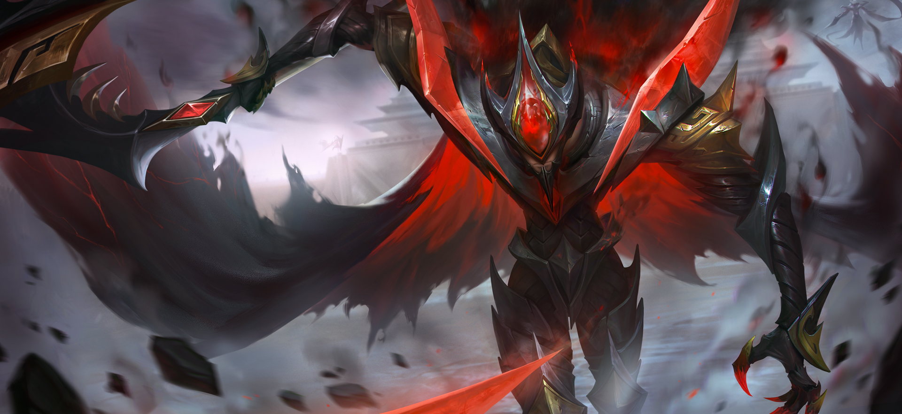
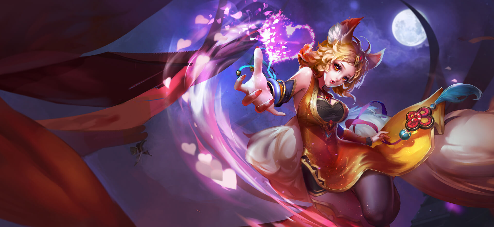
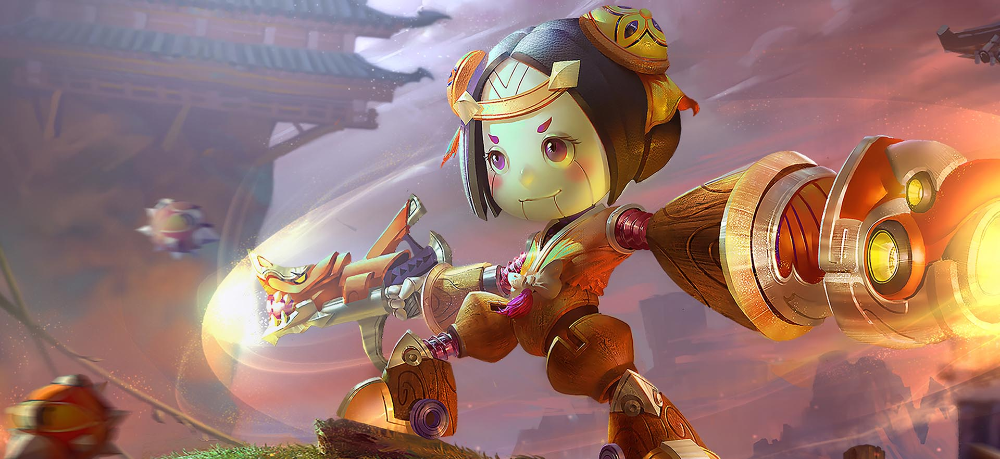
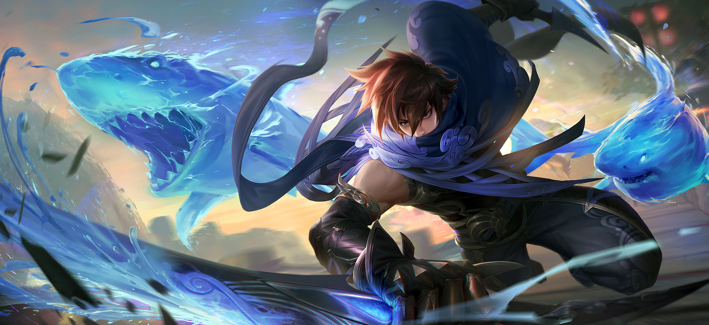
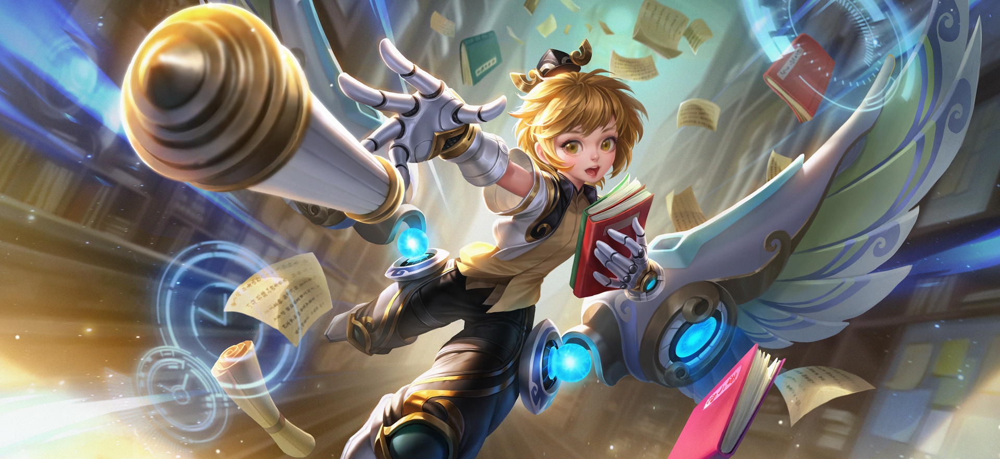
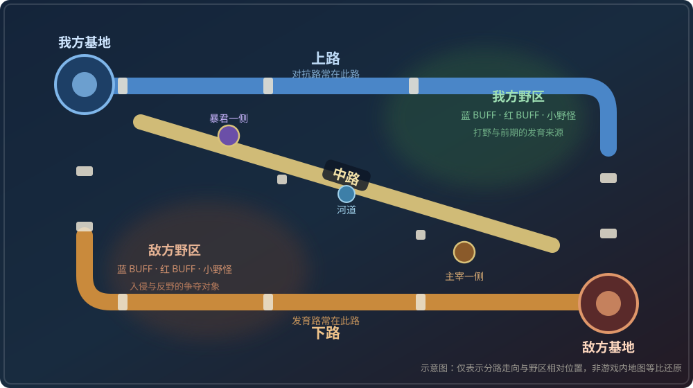

用职业定义角色
《王者荣耀》目前拥有 128 位英雄，每位英雄都归属于坦克、战士、刺客、法师、射手、辅助六大职业中的一种或多种。职业是这套游戏里最基础的一套「语言」：你在选人阶段说的每一句话，几乎都要靠职业来指代。
职业同时决定三件事：站位、资源、胜负责任。
六大职业一览
把六个职业正面摆开，各自的定位差异会非常清楚。
坦克
血肉之墙
悬停 / 点击查看血厚防高、生存能力极强，输出能力一般。团战中占据前排，替队友吃掉第一波伤害与控制。
以白起为代表：死神之镰把敌方英雄拉到身边，傲慢嘲讽强制敌人攻击自己。坦克最考验开团时机——早一秒是送，晚一秒是卖。
战士
攻守之间
悬停 / 点击查看攻守兼备，通常站在坦克身后，在敌方阵型里制造混乱。
亚瑟是战士里的经典样本：誓约之盾可以沉默敌方主力，回旋打击对范围内敌人持续造成伤害。战士介于坦克与刺客之间，既能扛压，也能切后排。
刺客
阴影中的利刃
悬停 / 点击查看生存能力较弱、爆发极高，核心任务是绕到敌方后排，一套技能带走对方的射手或法师。
刺客分物理系与法系两大战术分支，澜、镜、上官婉儿是两类打法的代表。进场时机不对就是送人头，对了就是一波团战的胜负手。
法师
战场的主宰者
悬停 / 点击查看生存能力较弱，但拥有强力的输出技能与控制效果，团战中站在后排消耗与控场。
妲己是「控制—输出」链条最直观的例子：偶像魅力先眩晕目标，女王崇拜与灵魂冲击跟上完成爆发。一个精准的控制，价值往往高于十次普攻。
射手
远程的收割者
悬停 / 点击查看拥有全场最高的远程持续输出，利用手长优势推塔与消耗，同时也最怕被近身。
鲁班七号的空中支援可以威胁远处敌人，河豚手雷与无敌鲨嘴炮提供远程消耗与收割手段。射手的信条只有一句：活着才有输出。
辅助
看不见的胜负手
悬停 / 点击查看生存与输出都平庸，但能通过技能为队友提供增益、为敌人制造控制。
孙膑的时之波动为队友补充护盾并提升移速，时空爆弹控制敌方主力，时光流逝降低敌人移速。辅助常被忽视，却常常决定一支队伍的下限。
下面五位代表英雄的官方原画，可以直观看出职业之间的造型差异。
{kind=link}

{kind=link}

{kind=link}

{kind=link}

{kind=link}

从技能看定位
职业差异最终落地在一套技能上。以射手鲁班七号为例：被动把普攻变成范围扫射，一技能负责减速留人，二技能负责击退与远程收割，大招负责区域压制与视野。
被动 · 火力压制
连续普攻到一定次数后，下一次普攻会变成机关枪扫射，对敌方英雄造成基于其最大生命值的物理伤害，对兵线、野怪与防御塔造成固定物理伤害；使用技能后同样会触发扫射。
这也是「攻速」对射手格外重要的原因：被动触发得越快，单位时间内的输出越高。
一技能 · 河豚手雷
向指定位置投掷手雷，对范围内的敌人造成物理伤害并降低其移动速度，持续一段时间。
它的价值不在伤害，而在留人：命中的减速能帮队友补上后续输出，也是鲁班七号少有的自保手段。
二技能 · 无敌鲨嘴炮
向指定方向发射火箭炮，击退身前的敌人；命中英雄后造成物理伤害，并附带目标已损生命值一定比例的法术伤害。
「按已损生命结算」让它收割残血格外可靠，也是它能隔着半个屏幕抢到人头的技能。
三技能 · 空中支援
召唤河豚飞艇向指定方向持续支援，飞艇可以照亮视野，并不断对范围内的随机敌人投掷炸弹造成范围物理伤害。
这是一个典型的区域控制型大招：它不追求精准命中，而是逼迫对手离开某片区域。
阵容与分路
六个职业最终要解决的问题是「怎么排」。一局比赛里有三条兵线加一片野区，合理的配置通常是：对抗路放坦克或战士，中路放法师，发育路放射手加辅助，野区交给刺客或战士。坦克承伤，射手与法师输出，刺客切后排，辅助串联——任何一个环节缺位，团战都会立刻暴露出问题。
这也解释了为什么「版本强势英雄」并不等于「稳定上分」：一个英雄再强，如果队伍在承伤、输出、切后排、串联这四个环节里缺了两个，胜负仍然很难看。
{kind=link}

官方在职业之外还标注了英雄的分路推荐与特长（如先手、突进、收割、控制）。同样是坦克，有的偏开团，有的偏保护——把职业、分路与特长放在一起看，比只看职业标签准确得多。
- 六大职业：坦克、战士、刺客、法师、射手、辅助，部分英雄同时属于多个职业。
- 职业决定站位、资源分配与团战责任，但职业与分路并非一一对应。
- 代表英雄：白起、亚瑟、澜与镜、妲己、鲁班七号、孙膑。
- 一套完整阵容需要在承伤、输出、切后排、串联四个环节上都不缺位。